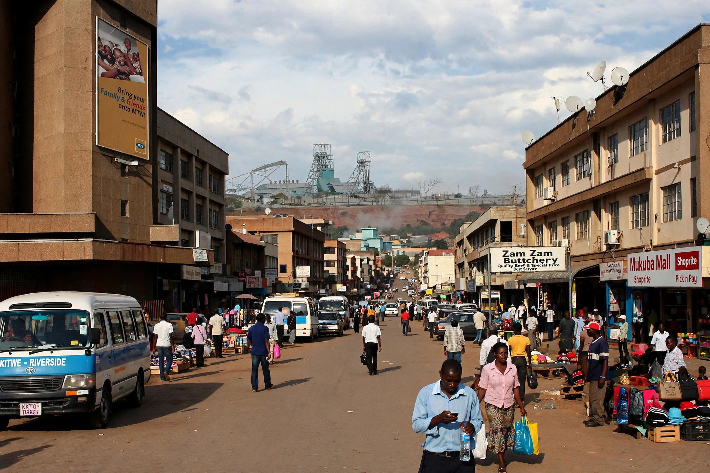

| Kitwe | |
|---|---|
| Country | Zambia |
| Province | Copperbelt |
| Founded | 1936 |
| Population | approx. 625,000 (2022 census, district) |
Kitwe is a city in Zambia's Copperbelt Province, the second or third largest city in the country and the centre of its copper mining industry. It lies near the Kafue River, close to the border with the Democratic Republic of the Congo.

Kitwe was founded in 1936 as an adjunct to the Nkana copper mine, one of the richest copper deposits in the world, developed by the Rhodesia Broken Hill and Rhodesia Selection Trust companies. The settlement grew around the mine townships of Kitwe and Nkana, and in 1966, after Zambian independence, the two were merged into the city of Kitwe.
Copper mining and smelting dominate the economy, though the city has diversified into engineering, timber, cement and retail. Kitwe is home to the Copperbelt University, the Mindolo Ecumenical Foundation, and two famous football clubs, Nkana FC and Power Dynamos. The city has a twin-city relationship with several mining cities abroad.